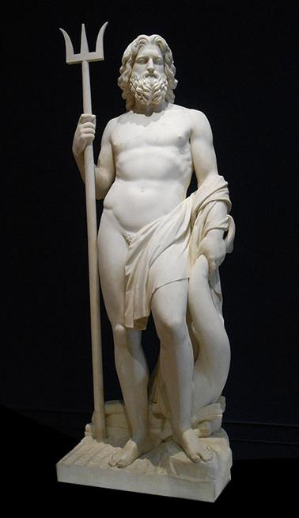
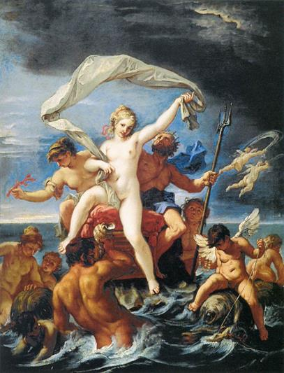
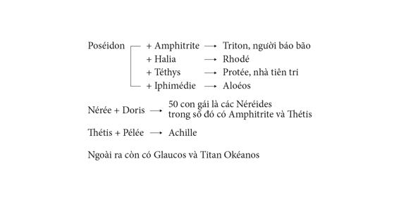

Ở đáy biển sâu có một cung điện vô cùng đẹp đẽ và tráng lệ, đó là cung điện của Poséidon, vị thần trị vì, cai quản toàn bộ thế giới biển nước mênh mông bao quanh mặt đất. Poséidon là con của Cronos và Rhéa, là anh ruột của thần Zeus. Người xưa kể lại, Poséidon kết bạn với những con quỷ biển khá thân thiết tên là Telchines. Có người nói chính lũ quỷ biển này đã nuôi nấng Poséidon lúc nhỏ như những Curètes đã nuôi nấng Zeus (chẳng rõ trước hay sau khi Poséidon bị Cronos nuốt?).

Poséidon
Telchines là con của thần biển Pontos và nữ thần Gaia, hình thù nom rất quái dị, nửa người nửa thuồng luồng, ba ba, nhưng lại có chân bơi đi bơi lại trên mặt nước như những mái chèo. Là giống quỷ dữ, chúng luôn luôn gây ra những tai họa khủng khiếp cho thế giới loài người như: biển động, sóng thần, mưa đá, bão lụt, núi lửa phun, đất sụt lở... Vì thế mặc dù chúng có tài rèn sắt nấu đồng, sáng chế ra các loại vũ khí, đồ dùng, đúc tượng các vị thần linh, bất tử, song các vị thần vẫn không thể nào xóa bỏ cho chúng cái tội làm cho đất đai cằn cỗi, mùa màng thất bát, nhất là cái tội làm cho nước sông Styx quanh năm lúc nào cũng bốc khói, tỏa hơi. Thế giới Olympe đã họp và quyết định trừng phạt lũ quỷ dữ thù địch với loài người và khinh thị thần thánh này. Thần Zeus biến chúng thành những ngọn núi đá. Có người lại kể, Apollon với những mũi tên thần đã kết liễu đời chúng.
Telchines có một người em gái tên là Halia, cô nàng “phải lòng” Poséidon. Hai người lấy nhau sinh ra được một người con gái đặt tên là Rhodé, vì lẽ đó hòn đảo quê hương của Telchines mang tên là Rhodes. Nhưng người vợ chính thức mà Poséidon yêu say đắm lại là nàng Amphitrite. Chuyện tình duyên của họ đối với người trần thế chúng ta quả là có... hơi lạ, hơi khác thường, song cũng không đến nỗi khó hiểu. Amphitrite là con gái của lão thần Biển-Nérée đầu bạc, vị thần được mệnh danh là “ông già của biển cả”, một vị thần mà trong trái tim lúc nào cũng chỉ có những ý nghĩ quang minh chính trực và nhân hậu. Lão thần Biển-Nérée tính nết hiền từ, thẳng thắn, rất đáng yêu như lúc biển khơi trời yên sóng lặng, trăng tỏ mây quang. Lão chẳng hề biết nói dối với một ai bao giờ, sẵn sàng dùng tài tiên tri của mình chỉ bảo cho mọi người biết những điều họ hỏi. Lão có tài biến mình thành mọi loài, mọi vật. Nérée lấy Doris, một Okéanide, làm vợ. Đôi vợ chồng này sinh được năm mươi người con gái có sắc đẹp nghiêng nước nghiêng thành, gọi bằng một cái tên chung là Néréides, tức là những tiên nữ của biển cả, con của lão vương Nérée. Chính trong số Néréides này, một cô làm thần Poséidon “ra ngẩn vào ngơ” mất mấy năm trời là nàng Amphitrite, một cô khác làm thần Zeus “đứng ngồi không yên” là nàng Thétis mà sau này trở thành vợ của lão vương Pélée và là mẹ của người anh hùng Achille.
Bữa kia những nàng Néréides rủ nhau đi tắm biển. Tắm xong các Néréides lên bờ vui chơi, ca hát. Các nàng không biết rằng có một vị thần đã bắt gặp và say sưa ngắm nhìn cảnh đẹp thần tiên ấy. Vị thần đó là Poséidon. Vâng, đúng thế, nhưng nếu như Poséidon chỉ say sưa, xúc động trước vẻ đẹp của các tiên nữ đang ca múa giữa cảnh trời mây lồng lộng, sóng nước bao la, gió vi vu và biển rì rào thì đã không nên chuyện. Poséidon say mê cảnh đẹp, song Poséidon lại say mê một tiên nữ đẹp trội hẳn lên, đẹp một cách kỳ lạ khác thường trong đám Néréides, đó là nàng Amphitrite. Và Poséidon đã tìm cách gặp nàng để giãi bày tâm sự. Nhưng Amphitrite từ chối và trốn biệt. Nàng đoán biết việc từ chối của nàng tất sẽ dẫn đến những chuyện không hay cho nên nàng trốn đi một nơi xa biệt tích biệt tăm, đến tận nơi kiệt cùng của biển, quê hương của thần Atlas. Nhớ người đẹp bồn chồn khắc khoải, Poséidon đi tìm khắp nơi này nơi khác, năm này năm khác nhưng vẫn không thấy tăm hơi. Một con cá heo thông cảm với nỗi lòng của vị thần đã mách bảo cho thần biết nơi Amphitrite trú ngụ: một cái hang ở mãi vùng biển cực Tây và Poséidon đã đến tận vương quốc của thần Atlas bắt Amphitrite về làm vợ. Có chuyện lại kể, chính con cá heo biết nơi trú ngụ của Amphitrite đã bắt nàng đem nộp cho Poséidon. Để trả ơn con cá heo, Poséidon đã cho giống cá heo khi chết biến thành một chòm sao trên trời.

Poséidon và Amphitrite
Amphitrite sống với chồng ở trong cung điện vàng đẹp đẽ dưới biển sâu. Nàng sinh được một trai đặt tên là Triton. Triton, tiếc thay chẳng giống mẹ, chẳng xinh đẹp như mẹ chút nào, mà lại nửa người nửa rắn và có những hai cái đuôi rắn. Có người lại nói hình thù Triton rất đáng sợ: mặt người nhưng miệng lại rộng đến mang tai, răng nhọn và dài như răng lợn lòi, hổ, báo. Thay vào hai tai là hai cái mang cá lúc nào cũng thở phập phồng. Mình mẩy thì sần sùi như vỏ sò, vỏ ốc. Tay chân là của giống rùa, ba ba. Triton thường cầm trong tay một chiếc vỏ ốc cực lớn. Đó là chiếc tù và như chiếc kèn lệnh mà khi Triton cất tiếng thổi lên là có thể gây ra sóng to gió lớn hoặc có thể dẹp yên mọi sóng gió làm cho mặt biển trở lại cảnh thanh bình. Nhưng Triton chỉ được phép thổi tù và khi có lệnh của thần Poséidon. Những người đi biển mỗi khi nghe thấy tiếng tù và của Triton rúc lên u... u..., oang... oang... là phải mau mau tìm nơi trú ẩn. Họ coi Triton như một vị thần nhân đức đã báo trước cho họ biết tai họa và họ có thể cầu khẩn Triton để Triton truyền đạt nguyện vọng của họ tới thần Poséidon. Tiếng tù và của Triton thổi lên to, to lắm, không ai là người không nghe thấy. Đã có kẻ thổi kèn ngông cuồng tưởng rằng tiếng kèn của y thổi là to nhất trên đời, tức khí vì tiếng tù và của Triton, thách thức Triton thi đấu. Và y ra sức thổi, phồng mồm trợn mắt lên thổi, phình bụng, gân cổ lên thổi, thổi đến đỏ mặt tía tai, thổi đến sùi cả bọt mép ra mà không sao át được tiếng tù và của Triton. Kết cục là kẻ đó, cái tên Énée liều lĩnh to họng lớn phổi đó, kiệt sức, đứt hơi, chết thẳng cẳng. Trong cuộc giao tranh giữa các vị thần Olympe với những người Gigantos-Đại khổng lồ, chỉ nghe thấy tiếng tù và của Triton là các tên Gigantos hồn xiêu phách lạc, cắm đầu chạy.
Quần tụ chung quanh Poséidon, người anh vĩ đại của Zeus, là lão thần biển Nérée và các con gái - những nàng Néréides - là thần biển Protée, Glaucos, và là các Titan Okéanos.
Protée, theo một số người, là con của Poséidon và nữ thần Téthys, còn một số người khác lại bảo Protée là gia nhân của thần Poséidon. Đây là một vị thần già đầu bạc, quê hương ở đảo Pharos gần Ai Cập. Poséidon giao cho Protée chăn nuôi những con hải cẩu, tài sản quý giá của mình. Protée có biệt tài tiên tri, tiên đoán, chẳng những biết việc tương lai mà còn biết tỏ tường cả những việc quá khứ và hiện tại. Nhưng Protée không tốt bụng như lão vương Nérée đầu bạc. Muốn hỏi được Protée phải kiên trì và dũng cảm, phải bất ngờ đến chộp được Protée. Bị bắt, Protée sẽ biến thành các con vật, muôn hình muôn vẻ như mặt nước có thể biến hóa thành bất cứ con vật gì, hình vẻ gì. Dũng tướng Ménélas sau cuộc Chiến tranh Troie trở về quê hương đã lạc bước tới xứ sở của Protée. Nhờ con gái của Protée - nàng Idothée - chỉ bảo cách đối xử với cha mình, Ménélas hỏi được đường về quê hương và biết được số phận tương lai những chiến hữu của mình. Mặc cho Protée biến hóa lúc thì sư tử, hổ, báo... rồi thì rắn, rồng, Ménélas cứ bám chặt lấy lưng Protée cho đến lúc Protée đành chịu, phải giải đáp những câu hỏi của Ménélas. Ngày nay trong văn học một số nước châu Âu để chỉ cái gì khó nắm bắt, hay biến đổi, đa dạng muôn hình muôn vẻ người ta thường ví giống như Protée, loại Protée. Protée trở thành danh từ chung chỉ người tính khí thất thường, hay thay đổi ý kiến. Liên quan đến Protée-Nước-Tài tiên tri, trong tiếng Nga có thành ngữ Như đã nhìn vào nước ấy, nghĩa là đã biết trước mọi việc, tương đương với thành ngữ Đi guốc vào bụng trong tiếng Việt.
Còn Glaucos vốn xưa kia là người đánh cá nghèo ở đất Béotie, Hy Lạp. Một hôm chàng kéo được một mẻ lưới đầy cá, nhưng lạ thay, lũ cá mà chàng trút xuống trên bờ cỏ cứ quẫy mạnh, và lao hết xuống biển, không tài nào ngăn giữ được. Ngạc nhiên trước sự việc lạ lùng đó, Glaucos bứt thử mấy lá cỏ trên bờ đưa lên mũi ngửi và rồi... đưa vào miệng nhấm nhấm thử xem chúng có hương vị gì. Ngờ đâu, đây lại là thứ cỏ thần do Titan Cronos xưa kia gieo trồng. Vì thế chỉ phút chốc Glaucos cảm thấy trong người thay đổi khác thường. Chàng thấy biển khơi đẹp một cách lạ lùng. Chàng ngắm nhìn biển say sưa như ngắm nhìn những người thân yêu nhất. Chàng bỗng nảy ra ý định xuống tận đáy biển sâu để xem xem thế giới của thần Poséidon cai quản nó kỳ lạ như thế nào. Và trái tim chàng đã thôi thúc chàng lao đầu xuống biển. Thần Okéanos, nữ thần Téthys và các nàng Néréides đón được Glaucos. Họ đã dùng tài năng và quyền thế của mình tẩy trừ chất người trần tục đoản mệnh của Glaucos đi để cho chàng trở thành một vị thần bất tử. Và thế là Glaucos trở thành một ông già râu tóc lòa xòa như rêu như rong biển màu tím sẫm, đặc biệt Glaucos lại mọc ra một cái đuôi như đuôi cá. Glaucos có tài tiên đoán như Nérée và Protée. Chàng rất tốt bụng với những người đi biển, lắng nghe mọi lời cầu nguyện của họ một cách trân trọng và sẵn sàng giúp đỡ họ khi cần thiết.
Còn thần Okéanos, như chúng ta đã biết, thuộc về thế hệ thần già. Danh dự và vinh quang của Okéanos kể ra không thua kém gì thần Zeus nhưng quyền cai quản Đại dương và sóng nước thì đã chuyển vào tay Poséidon. Vì thế những công việc bề bộn của thế giới Olympe không hề làm bận tâm đến Okéanos. Các con trai và con gái của thần vẫn được trị vì mọi ngọn nguồn sông suối.
Đáng yêu, đáng quý nhất là những tiên nữ Néréides. Các nàng thường từ đáy biển sâu đội nước, nổi lên vui chơi trên mặt sóng dập dềnh. Khi thì các nàng nắm tay nhau thành một hàng dài lướt đi trên mặt nước, khi thì quây lại thành một vòng tròn ca múa theo nhịp sóng lâng lâng đang trườn lượn nối đuôi nhau lớp lớp chạy vào bờ. Gió lộng của biển khơi đưa tiếng ca của các Néréides đi khắp mọi nơi. Tiếng ca đập vào vách đá và vách đá bắt lấy lời ca, nhắc lại, vang vọng ngân nga khắp bờ biển có bãi cát trắng dài. Người ta nói, các Néréides bảo vệ cho những chuyến đi biển của con người được bình yên vô sự, đến nơi đến chốn, để cho mặt biển thuyền bè xuôi ngược đông vui.
Thần Poséidon không phải chỉ ở trong cung điện. Thần luôn luôn đi lại, xem xét thế giới của mình cai quản. Và thần cũng phải luôn luôn lên đỉnh Olympe để dự các cuộc họp. Một cỗ xe có bốn con ngựa thần đưa Poséidon đi. Poséidon đứng hoặc ngồi trên xe, tay cầm chiếc đinh ba (trident), vũ khí do thần Thợ rèn-Héphaïstos làm ra. Nước rẽ ra mở đường cho những con thần mã tung vó. Chiếc xe lướt đi trên mặt biển mênh mông và khi cần những con thần mã đưa chiếc xe vượt lên mặt biển, rẽ mây bay tới đỉnh Olympe cao ngất. Mọi người rất sợ cây đinh ba trong tay thần Poséidon. Chỉ cần thần quay đầu nó lại, phóng một nhát xuống mặt biển là sóng quẫy lên, rồi lớp lớp dâng cao ngút, sôi réo ầm ầm. Bão tố gào thét quật những con sóng cao ngất vào bờ làm rung chuyển cả mặt đất. Nhưng chỉ cần thần cầm ngang cây đinh ba hay quay ngược nó lại cho mũi nhọn chĩa lên trời là mặt biển lại yên tĩnh đáng yêu. Các tiên nữ Néréides lại tiếp tục vui chơi, ca múa và những đàn cá heo lại nhảy múa bơi lượn tung tăng vây quanh cỗ xe tuyệt diệu của vị thần làm Rung chuyển Mặt đất. Khi ấy gió lại đưa bàn tay trìu mến vuốt ve trên mặt biển mênh mông đang thở đều đặn phập phồng.
Poséidon tiếng Hy Lạp có nghĩa là: “Chồng của đất”. Theo các nhà nghiên cứu cái tên này có một nguồn gốc xa xưa trong huyền thoại tối cổ từ nguồn gốc tôtem (ngựa) cho đến việc chuyển Poséidon sang một vị thần Đất.
Gia hệ Poséidon và các thần Biển
